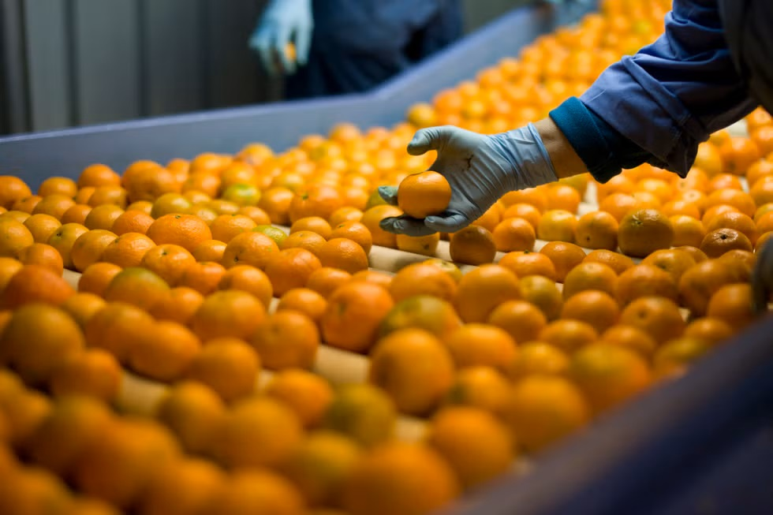
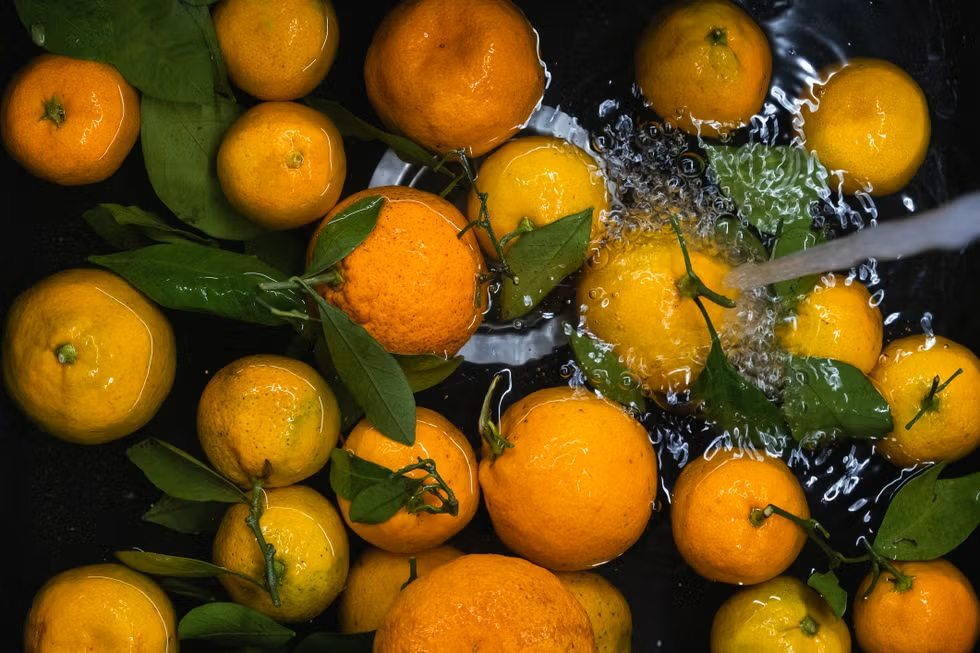

橘子
橘子營養成分及功效
橘子含有豐富的營養素包含維生素C、維生素B群、鉀、磷、鎂和銅等，可以幫助身體抗發炎以及抗氧化，更能預防癌症、保護心臟健康、顧眼睛以及提升皮膚與免疫力等。100g的橘子大約有40大卡，建議一天食用1至2顆較為剛好，吃太多也會造成身體負擔。

橘子清洗方式
橘子清洗的時候建議用大量的清水清潔表皮，以流動的水沖洗、並用手搓洗表面，蒂頭凹陷處用則用軟刷輕刷以去除農藥，剝皮後也要記得洗手再食用，避免手沾染殘留果皮殘留農藥。

「橘子」可以怎麼吃？
橘子最常見的食用方式除了直接吃，再來就是做為甜點使用，不管是蛋糕、奶酪、優格等，甚至與不同柑橘類搭配放入氣泡水，加入酸甜風味不管大人小孩都超愛！
若擔心橘子吃太多容易上火，可以與果肉上的白絲「橘絡」一起吃下去，
資料來源: